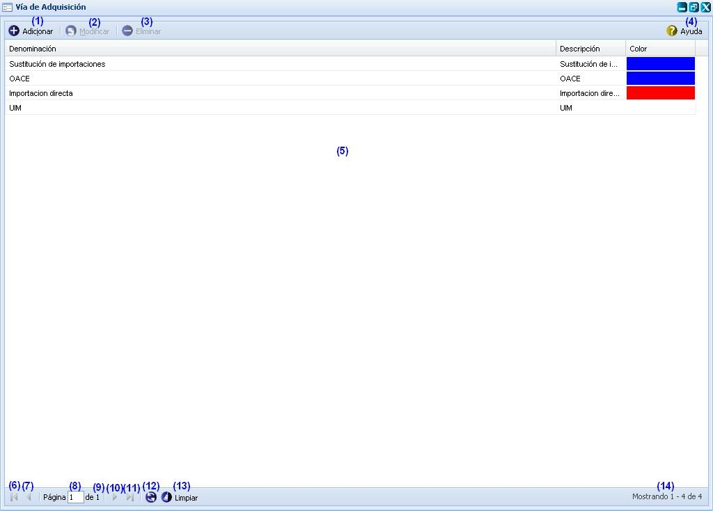
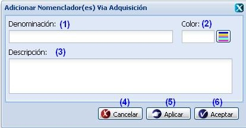
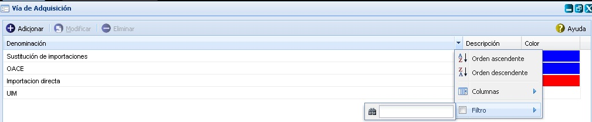

--Vía de adquisición--
Para acceder a esta funcionalidad se selecciona la opción Inicio//Planificación material/Configuraciones/Vía de adquisición.
Una vez seleccionada esta funcionalidad, se mostrará en pantalla la interfaz principal de la misma, donde el usuario podrá realizar todas las acciones a las que tenga acceso, ver Figura 1.

Figura 1. Interfaz principal Órgano que satisface.
Las diferentes opciones que conforman la figura anterior permiten:
- Adicionar vía de adquisición, ver Adicionar vía de adquisición, esta acción permite adicionar una vía de adquisición, para ejecutar esta funcionalidad el sistema le mostrará la interfaz de usuario “Adicionar nomenclador(es) vía de adquisición”, cuando se presione el botón Aceptar o Aplicar de la interfaz el sistema le mostrará un mensaje de información notificando que se adicionó satisfactoriamente la vía de adquisición. Se puede acceder a esta funcionalidad con las teclas (Alt + I).
- Modificar una vía de adquisición previamente seleccionado en el listado. Una vez seleccionada la misma y presionada la opción Modificar de la interfaz, el sistema le mostrará la interfaz con los datos cargados, posibilitando que se modifiquen los datos que se requieran. Se puede acceder a esta funcionalidad seleccionando la vía de adquisición y oprimiendo las teclas (Alt + M). Si al modificar la vía de adquisición se introduce uno que ya existe, el sistema mostrará un mensaje de error. El procedimiento del llenado de los datos y selección de los botones de la interfaz Modificar vía de adquisición es muy similar al descrito en la funcionalidad de Adicionar vía de adquisición.
- Eliminar una vía de adquisición previamente seleccionado en el listado. Esta acción permite eliminar la vía de adquisición deseada, una vez seleccionada se procede a seleccionar la opción Eliminar de la interfaz, automáticamente se mostrará un mensaje de confirmación, que se puede Aceptar o Cancelar según sea el caso, de presionar la opción Aceptar el sistema le mostrará un mensaje de información sobre el éxito de la operación realizada, quedando eliminada la vía de adquisición seleccionada, si cancela el mensaje de confirmación, el sistema permanece en la interfaz principal y no elimina la vía de adquisición. Se puede realizar esta operación seleccionando una vía de adquisición en el listado y oprimiendo la tecla (Delete).
- Mostrar ayuda de la funcionalidad. Se puede realizar esta operación seleccionando la combinación de teclas (Alt + H).
- Se muestra el listado de las vías de adquisición registradas con anterioridad.
- Ir a la primera página, mostrando las primeras columnas.
- Ir a la página anterior.
- Muestra el número de la página donde se encuentra, se puede introducir el número.
- Muestra el número máximo de páginas.
- Ir a la siguiente página.
- Ir a la última página.
- Actualizar el listado de columnas.
- Limpiar filtro(s). Esta acción limpiará todos los criterios de búsqueda, deshabilitando los filtros realizados. Se puede realizar esta operación seleccionando la combinación de teclas (Alt + L).
- Mostrar la cantidad de resultados encontrados.
Adicionar vía de adquisición
Se presiona el botón Adicionar de la interfaz principal, ver Figura1. Inmediatamente aparecerá una ventana donde se podrán especificar los datos relacionados con la vía de adquisición que se desea adicionar, ver Figura 2.

Figura 2. Interfaz Adicionar vía de adquisición.
Las opciones de la figura anterior permiten:
- Introducir la denominación de la vía de adquisición que desea insertar.
- Seleccionar el color de la vía de adquisición que desea insertar.
- Introducir una breve descripción de la vía de adquisición.
- Cancelar las acciones y salir de la interfaz sin guardar los datos.
- Guardar los datos y limpiar los campos de la interfaz, permitiendo adicionar otra vía de adquisición.
- Adicionar los datos de la vía de adquisición al listado y cerrar la interfaz.
Validación de los campos:
- Los campos Denominación y Color son obligatorios, en caso de dejar estos campos vacíos el sistema debe mostrar el siguiente mensaje: “Existen campos obligatorios en blanco.” y en el mismo campo: “Este campo es obligatorio”.
- No se permite adicionar una Vía de Adquisición con una misma denominación. Si esto ocurre el sistema debe mostrar el siguiente mensaje de error: “La vía de adquisición que quiere adicionar ya existe.”.
- El campo denominación acepta caracteres alfanuméricos hasta 255 caracteres, en caso de introducir algún caracteres especial y presionar el botón Aceptar o Aplicar se debe mostrar el mensaje “Por favor verifique nuevamente que hay campo(s) con valor(es) incorrecto(s).” y en el mismo campo “Solo admite caracteres alfanumérico.” y si sobrepasa la cantidad establecida se debe mostrar el mensaje “El tamaño máximo requerido es de 255 caracteres.”.
- El campo descripción acepta caracteres alfa-numéricos y caracteres especiales sin límites, puede ser vacío.
Buscar vía de adquisición
Para ejecutar esta funcionalidad se debe presionar clic en el botón que aparece en la parte derecha de cada columna, ver Figura 3.

Figura 3. Búsqueda por filtrado de columnas en la interfaz.
Una vez realizado el paso anteriormente descrito se despliega la columna y se ofrece la posibilidad de realizar búsqueda mediante filtrado. Se introduce o selecciona el criterio de filtrado según la información que brinde la columna seleccionada, e inmediatamente se presiona la tecla Enter y el sistema mostrará en la interfaz principal vías de adquisición según el criterio de filtrado seleccionado. En caso de que no exista datos a mostrar para el criterio de filtrado seleccionado el sistema le notificará mostrando el siguiente mensaje de información: “No existen datos que se correspondan con los criterios de búsqueda especificados.”.
Limpiar criterio de búsquedas
Una vez realizada la búsqueda mediante el filtrado de columnas, para limpiar los criterios de filtrado introducidos debe de presionar la opción Limpiar que aparece ubicada en la parte central inferior de la interfaz. Esta opción limpiará todos los criterios de búsqueda, deshabilitando los filtros realizados y recargando todos los indicadores en la interfaz.